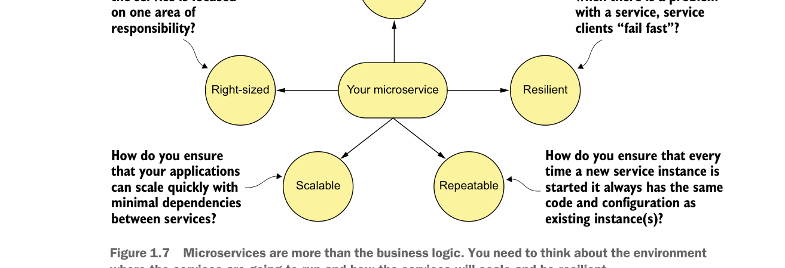

Microservice không chỉ là logic nghiệp vụ. Bạn cần suy nghĩ về môi trường mà các dịch vụ sẽ chạy và cách các dịch vụ sẽ mở rộng quy mô và có khả năng phục hồi.
trên đám mây) đòi hỏi nhiều hơn việc viết mã cho dịch vụ. Xây dựng một dịch vụ mạnh mẽ bao gồm việc xem xét nhiều chủ đề. Hình 1.7 làm nổi bật các chủ đề này.
Hãy cùng đi qua các mục trong hình 1.7 chi tiết hơn:
- Cỡ phù hợp—Làm thế nào để đảm bảo microservice của bạn có cỡ phù hợp để một microservice không gánh quá nhiều trách nhiệm? Hãy nhớ, khi có cỡ phù hợp, một dịch vụ cho phép bạn nhanh chóng thay đổi ứng dụng và giảm rủi ro tổng thể của sự cố gián đoạn toàn bộ ứng dụng.
- Minh bạch vị trí—Làm thế nào chúng ta quản lý các chi tiết vật lý của việc gọi dịch vụ khi trong ứng dụng microservice, nhiều phiên bản dịch vụ có thể nhanh chóng khởi động và tắt?
- Khả năng phục hồi—Làm thế nào để bảo vệ người tiêu dùng microservice và tính toàn vẹn tổng thể của ứng dụng bằng cách định tuyến quanh các dịch vụ bị lỗi và đảm bảo bạn áp dụng cách tiếp cận “fail-fast”?
- Có thể lặp lại—Làm thế nào để đảm bảo mọi phiên bản mới của dịch vụ được triển khai đều được đảm bảo có cùng cấu hình và cơ sở mã như tất cả các phiên bản dịch vụ khác trong môi trường sản xuất?
- Khả năng mở rộng—Làm thế nào để sử dụng xử lý bất đồng bộ và sự kiện để giảm thiểu các phụ thuộc trực tiếp giữa các dịch vụ và đảm bảo bạn có thể mở rộng quy mô microservice một cách mượt mà?
Cuốn sách này áp dụng cách tiếp cận dựa trên mẫu khi trả lời các câu hỏi này. Với cách tiếp cận dựa trên mẫu, chúng tôi trình bày các thiết kế phổ biến có thể được sử dụng trên nhiều